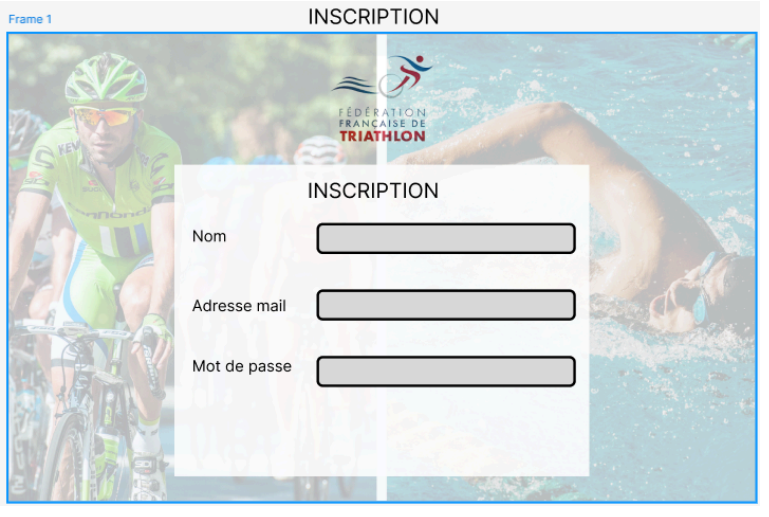
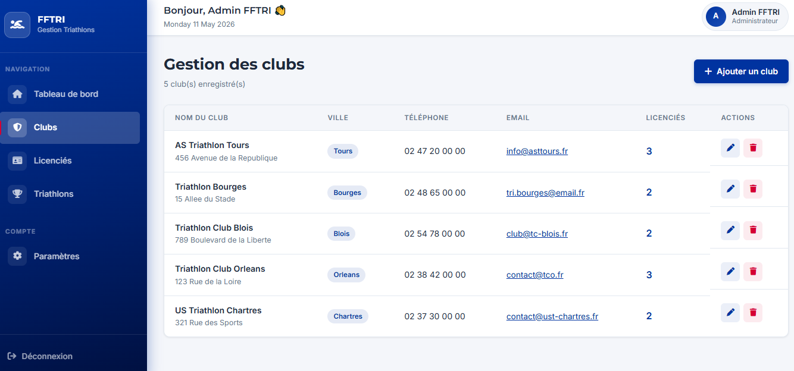

AP 4 · Application web FFTRI · Architecture MVC
Dans le cadre de l'AP 4, notre équipe a développé une application web complète de gestion pour la FFTRI (Fédération Française de Triathlon). L'objectif était de centraliser la gestion des clubs affiliés, des licenciés et des triathlons à venir au sein d'une interface d'administration sécurisée.
L'application repose sur une architecture MVC (Modèle-Vue-Contrôleur) en PHP natif, avec une gestion de version via GitHub et un suivi de projet sur Trello. Le projet a été réalisé en équipe : Samuel Aubron, Noah Herpin, Yasmin Khanjaoui et Matéo.
J'ai pris en charge deux réalisations clés : la conception de la maquette graphique de l'application et le développement de la page de gestion des clubs avec son CRUD complet.

Conception de la maquette graphique de l'interface d'administration FFTRI : sidebar de navigation, tableau de bord et gabarit des pages avant développement.

Développement de la page listant les clubs affiliés (nom, ville, téléphone, email, nombre de licenciés) avec actions d'édition et de suppression. CRUD complet intégré dans l'architecture MVC.
/index.php?module=clubs&action=create/index.php?action=login · authenticate · logout/index.php?module=dashboardmodule=clubs + actions : show, create, edit, deletemodule=licenciesmodule=triathlonsmodule=settings + updateProfile, changePassword, updatePreferences